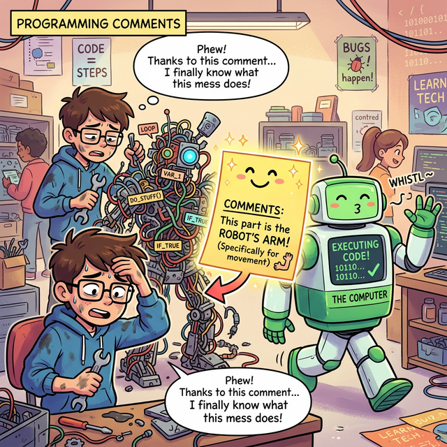
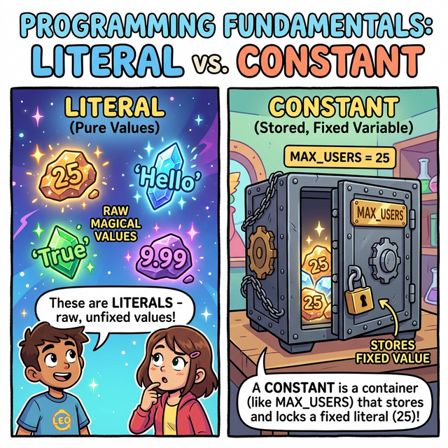

1주차 3세션: 파이썬 기초 문법과 문제 해결 📦
파이썬 주석과 독스트링
주석의 역할과 작성법
프로그램은 동작을 지시하는 코드와 설명이나 동작을 잠시 배제하는 주석으로 구분됩니다. 주석은 프로그램의 동작에 영향을 주지 않으며, 코드의 가독성을 높이기 위해 사용합니다.

(컴퓨터(로봇)는 주석으로 적힌 포스트잇 메모를 무시하고 지나가지만, 개발자(학생)는 메모를 읽으며 복잡한 코드를 쉽게 이해할 수 있습니다!)파이썬에서 한 줄 주석은 # 기호로 표기하며, # 이후부터 줄의 마지막 글자까지 컴퓨터는 없는 셈 무시하고 넘어갑니다.
Docstring (문서화 문자열)과 여러 줄 주석
파이썬에는 여러 줄에 걸쳐 공식적인 API 문서나 함수 설명을 담당하는 전용 주석 문법이 존재합니다. 이를 독스트링(Docstring, 문서화 문자열)이라고 부릅니다.
독스트링은 큰따옴표 3개(""") 또는 작은따옴표 3개(''')로 작성하며, 모듈이나 클래스, 함수의 바로 첫 번째 줄에 위치해야 합니다.
def calculate_area(radius):
"""
원의 넓이를 계산하는 함수입니다.
Args:
radius (float): 원의 반지름 값
Returns:
float: 계산된 원의 넓이 단위
"""
result = 3.14 * radius * radius
return result
상수와 리터럴의 개념
리터럴(Literal)과 상수의 차이점
프로그래밍 초보자들이 가장 헷갈려하는 개념 중 하나가 상수(Constant)와 리터럴(Literal)의 구분입니다.

(웹툰 비유: 허공에 빛나는 원시 데이터 원석 덩어리가 ‘리터럴’, 그것을 가져와 안전하게 담아 보관하며 ‘MAX_USERS’라는 큰 이름표를 붙인 튼튼한 금고 상자가 ‘상수’를 상징합니다.)- 리터럴 (Literal): 코드 상에 ‘직접 입력을 해서 문자 그대로 적혀 있는 고정된 값 자체’를 의미합니다. 즉, 데이터의 본질적인 원형입니다.
- 상수 (Constant): 리터럴(고정된 값)을 담아두고 ‘프로그램이 끝날 때까지 절대 변하지 않기로 약속한 그릇(변수)’을 의미합니다.
파이썬에는 진짜 상수가 없다?
파이썬에는 사실 Java의 final이나 C의 const처럼 문법적으로 값을 완벽하게 잠가버리는 진짜 상수 키워드가 존재하지 않습니다.
하지만 파이썬 개발자들은 관례적으로 “모든 글자를 대문자(UPPERCASE)로 적은 변수는 상수로 취급하니 절대 수정하지 말자!”라고 약속하여 사용합니다.
PI = 3.14159 # 상수 역할을 하는 변수
MAX_USERS = 100 # 상수 역할을 하는 변수
위 코드에서 PI, MAX_USERS는 상수이며, 3.14159와 100은 코드에 노출된 리터럴 값입니다.

(다이어그램: 리터럴(값)이 이름표가 붙은 상수 상표(그릇) 안으로 들어가는 과정을 보여줍니다.)리터럴의 종류 (정수, 실수, 문자열)
파이썬이 지원하는 데이터 종류에 따른 리터럴 표기법입니다:
- 정수 리터럴:
10,-3,0 - 실수 리터럴:
3.14,-0.001 - 문자열 리터럴:
"Hello",'Python' - 불리언 리터럴:
True,False(반드시 첫 글자가 대문자이어야 함)
주의: 파이썬 정수 리터럴 뒤에 다른 언어처럼 L을 붙이면 에러가 발생합니다:
7L # SyntaxError: invalid decimal literal
튜플(Tuple)의 기본 개념
상수들을 쉼표(,)로 나열하여 연결해 두면 파이썬은 자동으로 이를 소괄호로 묶인 튜플(Tuple)형태의 그룹 데이터 객체로 포장합니다:
>>> 10, -3
(10, -3)
튜플은 한 번 포장하여 생성하면 요소를 수정하거나 삭제할 수 없는 파이썬의 대표적인 불변(Immutable) 컨테이너 자료형입니다.
여러 상수 나열 시 SyntaxError
쉼표 없이 상수나 리터럴들을 띄어쓰기로만 나열하면 번역 파서가 구문을 해독하지 못해 에러가 발생합니다:
-5 4.5 # SyntaxError: invalid syntax
반드시 수식 계산용 연산자나, 데이터 나열용 쉼표를 삽입하여 코딩해야 합니다.
Java vs PHP vs Python 비교
주석 처리 방식의 차이
- Java & PHP: 한 줄 주석은
//를 사용하고, 여러 줄 주석은/* ... */를 사용합니다. - Python: 오직
#기호만 지원하며, 여러 줄 주석의 대안으로 모듈/클래스/함수 시작부에 독립된 독스트링(""" ... """)을 작성하여 표준 가이드라인으로 운용합니다.
진짜 상수의 존재 유무 비교
- Java:
final int MAX_SIZE = 100;와 같이 문법적 지시어로 값을 원천 봉쇄하여 대입 변경 시 컴파일 실패를 유도합니다. - PHP:
const MAX_SIZE = 100;또는define('MAX_SIZE', 100);키워드를 아키텍처 레벨에서 정식 지원합니다. - Python: 문법적인 상수가 없어 오직 개발자 간의 명명 규칙 약속을 통해
MAX_SIZE = 100과 같이 대문자 변수명으로 대체해 나갑니다.
개발자 검색 및 공식 문서 활용 기술
문제 해결을 위한 구글 검색 기술
코딩 중 모르는 에러가 났을 때 검색하는 핵심 기술 3요소입니다:
- 에러 코드 직접 검색: 발생한 에러 명칭(예:
NameError: name 'x' is not defined)을 그대로 복사해 구글링합니다. - site: 필터링:
site:stackoverflow.com 파이썬 에러명처럼 전 세계 개발자 답변 공유소인 스택오버플로우 사이트로 검색을 좁히면 90% 이상의 정답을 수 밀리초 만에 확보합니다. - 영문 검색의 강점: 한글 정보량 대비 영문 기술 문서의 정보 밀도가 수십 배 높으므로 가급적 영어로 에러를 질의하는 습관을 들여야 합니다.
공식 문서(Official Docs) 파헤치는 요령
오픈소스 라이브러리는 버전이 빠르게 변합니다. 블로그 정보는 오래되어 동작하지 않는 경우가 많으므로 항상 공식 레퍼런스(docs.python.org)를 보는 연습을 해야 합니다.
- TOC (목차) 훑어보기: 전체 모듈이 어떠한 구조로 쪼개져 있는지 전반적인 숲을 봅니다.
- 함수 시그니처 분석: 함수의 인수 목록과 반환값(Return value)이 무슨 데이터 타입인지 꼼꼼히 확인하고 주입하는 훈련을 거칩니다.
Matplotlib 맛보기
데이터 값의 첫 시각화 실습
가장 단순한 리터럴 값들도 파이썬의 꽃 matplotlib을 만나면 직관적인 그래프가 됩니다.
import matplotlib.pyplot as plt
# 고정된 상수들(리터럴) 설정
HP = 100
MP = 50
EXP = 75
# 간단한 막대 그래프 그리기
labels = ["Health", "Mana", "Experience"]
values = [HP, MP, EXP]
colors = ['red', 'blue', 'green']
plt.bar(labels, values, color=colors)
plt.title("Character Status (Constants)")
plt.show()
3세션 마무리
3세션 코딩 영단어
Comment: 논평, 의견, 식별표. (코드 안에서 컴퓨터는 무시하고 사람만 읽으라고 달아두는 메모나 주석을 뜻합니다.)Syntax: 구문, 문법. (SyntaxError는 파이썬 문법의 철자나 기호를 틀렸을 때 발생하는 에러입니다.)Tuple: 여러 개의 데이터 요소로 이뤄진 묶음 자체를 뜻하는 수학/컴퓨터공학 용어입니다. (파이썬에서는(10, 20)처럼 소괄호로 묶인 데이터 구조를 의미합니다.)
3세션 Vibe Coding
🗣️ 학생 프롬프트 (AI에게 이렇게 명령해 보세요): “파이썬으로 두 숫자를 곱해서 반환하는
multiply_two_numbers함수를 하나 짜 줘. 단, 파이썬의 표준Docstring양식을 아주 상세하게 포함해서 작성해 줘.”